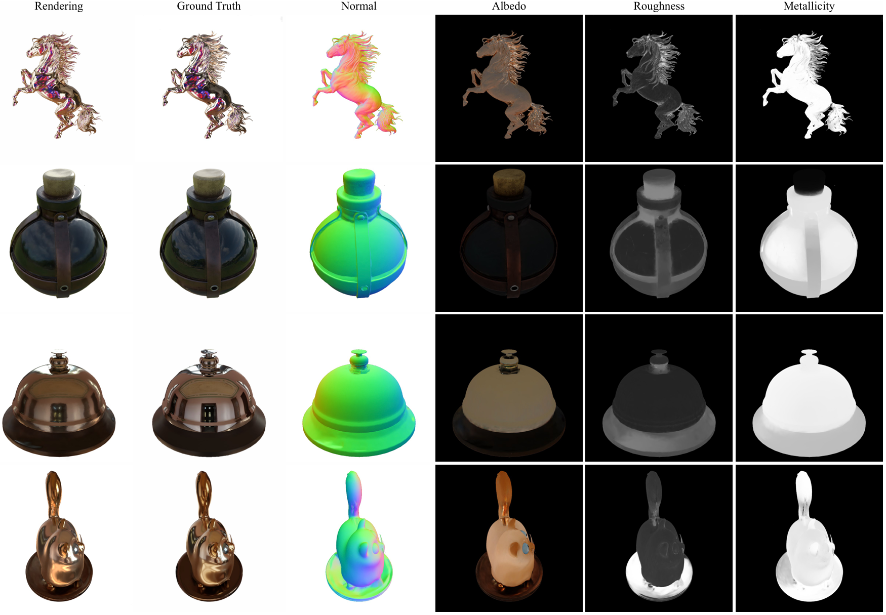

This website template is borrowed from Nerfies. Thank you!
Horse


Cat


Angel


Luyu


Potion


Tbell


Abstract
3D Gaussian splatting (3DGS) has shown its detailed expressive ability and highly efficient rendering speed in the novel view synthesis (NVS) task. The application to inverse rendering still faces several challenges, as the discrete nature of Gaussian primitives makes it difficult to apply geometry constraints. Recent works introduce the signed distance field (SDF) as an extra continuous representation to regularize the geometry defined by Gaussian primitives. It improves the decomposition quality, at the cost of increasing memory usage and complicating training. Unlike these works, we introduce a discretized SDF to represent the continuous SDF in a discrete manner by encoding it within each Gaussian using a sampled value. This approach allows us to link the SDF with the Gaussian opacity through an SDF-to-opacity transformation, enabling rendering the SDF via splatting and avoiding the computational cost of ray marching. The key challenge is to regularize the discrete samples to be consistent with the underlying SDF, as the discrete representation can hardly apply the gradient-based constraints (e.g., Eikonal loss). For this, we project Gaussians onto the zero-level set of SDF and enforce alignment with the surface from splatting, namely a projection-based consistency loss. Thanks to the discretized SDF, our method achieves higher relighting quality, while requiring no extra memory beyond GS and avoiding complex manually designed optimization.
Discretized SDF Pipeline
Our model discretizes the underlying continuous SDF into discrete samples and encodes the SDF values of samples on Gaussian primitives. We propose the median loss to facilitate convergence and projection-based consistency loss to regularize the discrete values of SDF samples. Besides, we design a spherical initialization for foreground objects to avoid local minima.
Result Gallary
Glossy Dataset

TensoIR Dataset
BibTeX
@InProceedings{zhu2025discretizedsdf,
title = {Gaussian Splatting with Discretized SDF for Relightable Assets},
author = {Zhu, Zuo-Liang and Yang, Jian and Wang, Beibei},
booktitle = {Proceedings of IEEE International Conference on Computer Vision (ICCV)},
year = {2025}
}